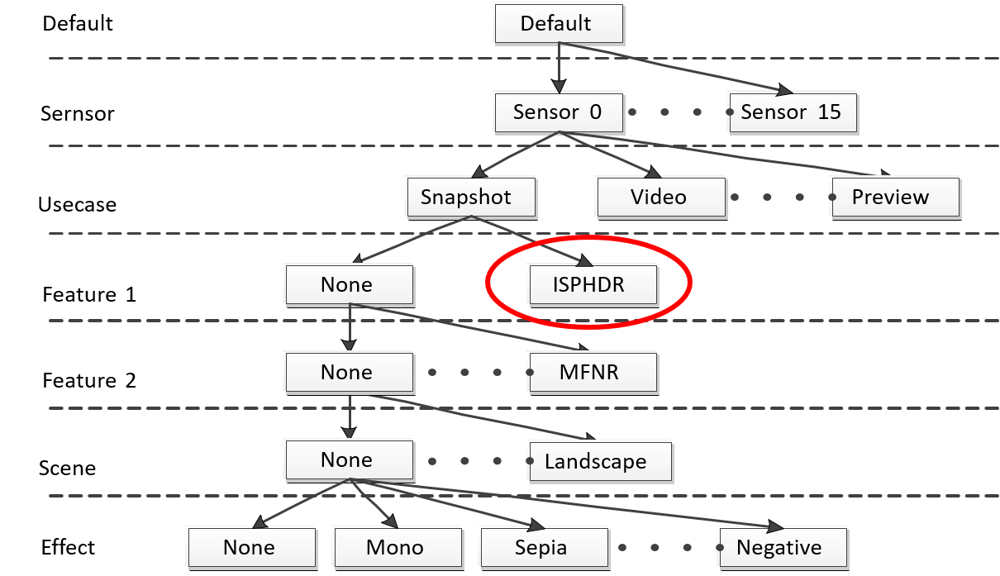

If the camera sensor supports high
dynamic range (HDR) and you want to offer an HDR setting on the device, add the ISPHDR
mode to the sensor|usecase that will offer the feature. Do this for each sensor|usecase
that will offer an HDR setting.
Figure : Add the ISPHDR mode for each sensor and use case that will
offer an HDR setting

Tuning HDR primarily involves
retuning other modules to compensate for the sensitivity afforded by the HDR module. The
following is the general procedure for HDR tuning.
-
Accept the defaults for the HDR modules.
-
Retune the coordinating IPE modules. The tone curve tuning in
the GTM modules is the most important for dynamic range.
-
PDPC – To remove bad pixels, tune PDPC so as not to harm
the resolution but still remove bad pixels. Set the T1 and T2 offsets as
T2 offset = T1 offset * exposure ratio. The T1 offset parameters are
bpc_offset and bcc_offset. The T2 offset parameters are
bpc_offset_t2 and bcc_offset_t.
-
ABF – Retune ABF to remove dots and zigzags by HDR and
tone curve. Retune the noise_std_lut when T1/T2 has a gain
difference.
-
GTM – Tone curve tuning is the most important for
dynamic range. Adjust the tone curve to generate 10-bit output by high
dynamic range.
-
Simulate and test.
-
Adjust HDR parameters as necessary.
-
To achieve good resolution, tune the recon_h_edge_th1/ recon_motion_th1/ recon_dark_th1 parameters in the HDR
module.
-
To remove motion effect, tune the mac_motion0_th1/ mac_motion0_th2/ mac_motion_strength parameters in the
HDR module.
-
Tune other HDR parameters as needed when there are
critical HDR issues with the default values.
-
Repeat procedure until performance goals are met.